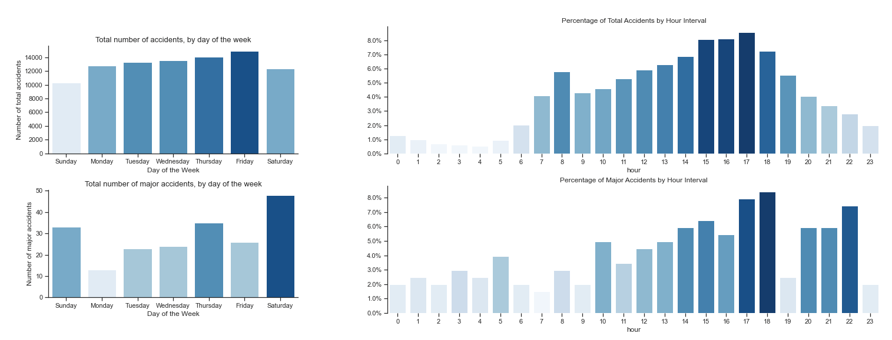

Major Traffic Accidents Analysis
This project is an analysis of the traffic accidents in 2020 in UK, based on the database provided by the department for transport. It is created in Python, with Jupyter Notebooks. The dataset includes 91,199 total accidents, out of which 202 were major accidents (0.22%).
You can find the Jupyter notebook in the git repository, here.
Now let's go through few of the insights.
What is a major accident?
A major accident is a fatal accident involving 3+ casualties . Throught this analysis we are trying to identify the characteristics of major accidents. The insights could be used to brainstorm interventions that could lower the number of deaths.
When would you be at highest risk to get into a major accident?
Short answer: Saturday after dark (evening / late evening), in a rural area with 60 km speed limit and in wet/damp conditions.
What time of day and day of week do most major accidents happen?
The day of the week when most major accidents happen is Saturday. While for the total accidents we can see a progression throughout the week (an increasing number of accidents from Monday-Friday, with a drop at the beginning of the weekend), the major accidents don't follow an obvious pattern. Saturday stands out as the day with the most major accidents.Looking at the hour, we can see that major accidents happen mostly during evening and late evening hours.
On the other hand, all the accidents counted together (major + non-major) follow a curve. When we look at the number of accidents per hour, we can distinguish 2 peaks - the highest one during the afternoon "rush hour" around 3 pm-6 pm and a smaller one during the morning "rush hour" (8 am).
A 2017 bbc article mentions that the Department of Transport classed the rush hours in England as between 6-9 am and 4-7 pm on weekdays, which mostly aligns with our plot by hourly intervals.
